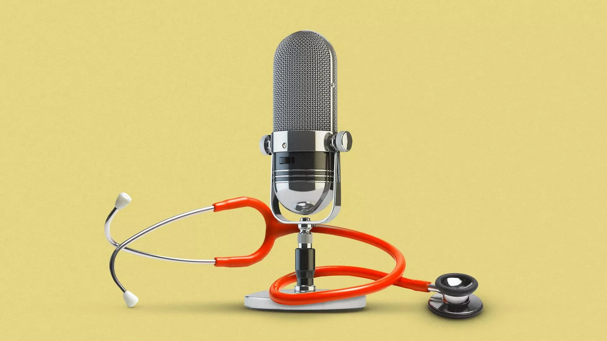

<?xml version="1.0" encoding="UTF-8"?>
<!--Generated by Site-Server v6.0.0-9034b042b86e977fd30b667c15e0fc04b30a053a-1 (http://www.squarespace.com) on Fri, 16 Dec 2022 06:03:56 GMT
--><rss xmlns:content="http://purl.org/rss/1.0/modules/content/" xmlns:wfw="http://wellformedweb.org/CommentAPI/" xmlns:itunes="http://www.itunes.com/dtds/podcast-1.0.dtd" xmlns:dc="http://purl.org/dc/elements/1.1/" xmlns:media="http://www.rssboard.org/media-rss" version="2.0"><channel><title>News Blog Entry - Sonde Health</title><link>news-blog.html</link><lastBuildDate>Thu, 08 Dec 2022 20:39:56 +0000</lastBuildDate><language>en-US</language><generator>Site-Server v6.0.0-9034b042b86e977fd30b667c15e0fc04b30a053a-1 (http://www.squarespace.com)</generator><description><![CDATA[]]></description><item><title>Our Series B fundraise</title><dc:creator>David Liu</dc:creator><pubDate>Thu, 08 Dec 2022 20:46:28 +0000</pubDate><link>/our-series-b-fundraise</link><guid isPermaLink="false">5daafd349a9f9f7b4aa8680f:5dc6aa39492ddd0f8b7ad59b:63924b9c2701574266b4a11f</guid><description><![CDATA[By David Liu, CEO Sonde Health December 8th, 2022

I am beyond excited to share the latest major milestone in Sonde’s journey 
to making preventive care possible through voice-powered health monitoring.


We have raised $19.25 million in Series B funding, led by Partners 
Investment, with NEOM Company and KT Corporation participating. Our 
existing investors, co-founder PureTech Health, M Ventures, MP Healthcare 
Venture Management, Neoteny and Evidity Health Capital all came back and 
invested in this round. ]]></description><content:encoded><![CDATA[<p><a href="../../../live/www.sondehealth.com/news-blog/our-series-b-fundraise.html">Permalink</a><p>]]></content:encoded><media:content type="image/jpeg" url="../../../live/images.squarespace-cdn.com/content/v1/5daafd349a9f9f7b4aa8680f/1670532368275-OS5SG2D0D1DRG5DMES9L/sonde-post.jpg" medium="image" isDefault="true" width="885" height="548"><media:title type="plain">Our Series B fundraise</media:title></media:content></item><item><title>Sonde Health Raises $19.25 Million Series B to Build the  Next Generation of Voice-Based Health Monitoring</title><dc:creator>David Liu</dc:creator><pubDate>Thu, 08 Dec 2022 17:40:16 +0000</pubDate><link>sonde-health-raises-series-b</link><guid isPermaLink="false">5daafd349a9f9f7b4aa8680f:5dc6aa39492ddd0f8b7ad59b:63921b94958b5213092f658d</guid><description><![CDATA[BOSTON – Dec. 8, 2022 – Sonde Health, a health technology company committed 
to bringing accessible health monitoring to everyone, has raised a $19.25 
million Series B investment round led by Partners Investment, with 
participation from NEOM Company, KT Corporation, and existing investors, 
including co-founder PureTech Health and M Ventures. The company has raised 
$35.25 million in total and will use the funding to drive its global 
commercial growth, deepen its respiratory and mental health monitoring 
technologies, and build capabilities for additional health conditions.]]></description><content:encoded><![CDATA[<p><a href="../../../live/www.sondehealth.com/news-blog/onde-health-raises-1925-million-series-b-to-build-the-next-generation-of-voice-based-health-monitoring.html">Permalink</a><p>]]></content:encoded><media:content type="image/jpeg" url="../../../live/images.squarespace-cdn.com/content/v1/5daafd349a9f9f7b4aa8680f/1670521202354-W2DHVYNDATC7LLSZBBFH/sonde-release.jpg" medium="image" isDefault="true" width="1040" height="760"><media:title type="plain">Sonde Health Raises $19.25 Million Series B to Build the  Next Generation of Voice-Based Health Monitoring</media:title></media:content></item><item><title>AI can detect signs of depression. Should we let it?</title><dc:creator>David Liu</dc:creator><pubDate>Thu, 08 Dec 2022 17:37:09 +0000</pubDate><link>https://www.bostonglobe.com/2022/12/08/opinion/ai-can-detect-signs-depression-should-we-let-it/</link><guid isPermaLink="false">5daafd349a9f9f7b4aa8680f:5dc6aa39492ddd0f8b7ad59b:6392204b029fc94a30bd4407</guid><description><![CDATA[By Elizabeth Svoboda Updated December 8, 2022, 3:00 a.m.

New apps promise to detect when you’re feeling blue and o!er some

assistance. But they still have to prove that the benefits of sharing

sensitive data outweigh any drawbacks.]]></description><content:encoded><![CDATA[<p><a href="../../../live/www.sondehealth.com/news-blog/ai-can-detect-signs-of-depression-should-we-let-it.html">Permalink</a><p>]]></content:encoded><media:content type="image/png" url="../../../live/images.squarespace-cdn.com/content/v1/5daafd349a9f9f7b4aa8680f/1670520999944-T5G7E1VVCC9AZT0CYUKP/Screenshot+2022-12-08+at+12.36.26+PM.png" medium="image" isDefault="true" width="848" height="478"><media:title type="plain">AI can detect signs of depression. Should we let it?</media:title></media:content></item><item><title>Sonde Health raises $19M Series B to prime its vocal tech</title><dc:creator>Don Naylor</dc:creator><pubDate>Thu, 08 Dec 2022 17:05:48 +0000</pubDate><link>https://www.axios.com/pro/health-tech-deals/2022/12/08/sonde-health-19-million-series-b-vocal-disease-detection</link><guid isPermaLink="false">5daafd349a9f9f7b4aa8680f:5dc6aa39492ddd0f8b7ad59b:639218cdaf8e5e6e793a429c</guid><description><![CDATA[Sonde Health raised $19.25 million in Series B funding to globalize its 
voice-based disease screening technology with partners in Korea and India. 
CEO David Liu tells Axios exclusively.]]></description><content:encoded><![CDATA[<p><a href="../../../live/www.sondehealth.com/news-blog/sonde-health-raises-19m-series-b-to-prime-its-vocal-tech.html">Permalink</a><p>]]></content:encoded><media:content type="image/jpeg" url="../../../live/images.squarespace-cdn.com/content/v1/5daafd349a9f9f7b4aa8680f/1670519006224-0O358W0MGO13701N0OVF/1669929529186.jpg" medium="image" isDefault="true" width="1500" height="844"><media:title type="plain">Sonde Health raises $19M Series B to prime its vocal tech</media:title></media:content></item><item><title>KT makes strategic investment in vocal biomarker technology company Sonde Health</title><dc:creator>David Liu</dc:creator><pubDate>Wed, 07 Dec 2022 15:04:56 +0000</pubDate><link>https://www.ajudaily.com/view/20221110153031706</link><guid isPermaLink="false">5daafd349a9f9f7b4aa8680f:5dc6aa39492ddd0f8b7ad59b:6390ab7065e7fc50e3072ed1</guid><description><![CDATA[SEOUL -- South Korea's top telecom company KT will enhance the 
competitiveness of the artificial intelligence-based health diagnosis 
business through a strategic investment in Sonde Health, a United 
States-based digital medicine company specializing in the detection of 
various diseases such as mental health and respiratory disorders through 
the analysis of voices.]]></description><content:encoded><![CDATA[<p><a href="../../../live/www.sondehealth.com/news-blog/kt-makes-strategic-investment-in-vocal-biomarker-technology-company-sonde-health.html">Permalink</a><p>]]></content:encoded><media:content type="image/png" url="../../../live/images.squarespace-cdn.com/content/v1/5daafd349a9f9f7b4aa8680f/1670425768499-5W0J3Q3FYSSYQPNCE3Z2/kt-investment.png" medium="image" isDefault="true" width="640" height="426"><media:title type="plain">KT makes strategic investment in vocal biomarker technology company Sonde Health</media:title></media:content></item><item><title>AXIOS: Sonde's "Voice biomarker" tech analyzes your voice for signs of depression</title><dc:creator>Craig Silva</dc:creator><pubDate>Tue, 25 Oct 2022 13:14:10 +0000</pubDate><link>../../../live/www.sondehealth.com/news-blog/voice-biomarker-tech-analyzes-your-voice-for-signs-of-depression.html</link><guid isPermaLink="false">5daafd349a9f9f7b4aa8680f:5dc6aa39492ddd0f8b7ad59b:6357e0a57cdd9776f43b2a23</guid><description><![CDATA[Software that analyzes snippets of your speech to identify mental health 
problems is rapidly making its way into call centers, medical clinics and 
telehealth platforms. The idea is to detect illnesses that might otherwise 
go untreated. Why it matters: Proponents of "voice biomarker" technology 
say the underlying artificial intelligence is good enough to recognize 
depression, anxiety and a host of other maladies.]]></description><content:encoded><![CDATA[<a href="https://www.axios.com/2022/10/20/voice-biomarkers-depression-anxiety-ai-telehealth" class="sqs-block-button-element--medium sqs-button-element--primary sqs-block-button-element"
    
  >
    Ready full article on Axios
  </a>


  

    
  
    

      

      
        <figure class="
              sqs-block-image-figure
              intrinsic
            "
        >
          
        
        

        
          
            
          
            
                
                  
                
            
          
        
          
        

        
      
        </figure>
      

    
  


  


<p class="">Software that analyzes snippets of your speech to identify <a href="https://www.axios.com/2022/09/07/adult-mental-health-treatment" target="_self"><span>mental health</span></a> problems is rapidly making its way into call centers, medical clinics and telehealth platforms.</p><ul data-rte-list="default"><li><p class="">The idea is to detect illnesses that might otherwise go untreated.</p></li></ul><p class=""><strong>Why it matters: </strong>Proponents of "<a href="https://www.karger.com/Article/FullText/515346" target="_blank"><span>voice biomarker</span></a>" technology say the underlying artificial intelligence is good enough to recognize <a href="https://www.ncbi.nlm.nih.gov/pmc/articles/PMC8303477/" target="_blank"><span>depression</span></a>, anxiety and a host of other maladies.</p><ul data-rte-list="default"><li><p class="">But its growing ubiquity raises privacy concerns similar to those brought about by <a href="https://www.axios.com/2022/03/17/facial-recognition-staying-power-government-irs" target="_self"><span>facial recognition</span></a>.</p></li></ul><p class=""><strong>Driving the news: </strong>Hospitals and insurance companies are installing voice biomarker software for inbound and outbound calls, so that — with patients' explicit permission —&nbsp;they can identify in real time if someone they're chatting with may be anxious or depressed, and refer them for help.</p><ul data-rte-list="default"><li><p class="">The technology is also making inroads in doctors' offices, clinical trials and senior centers — to identify problems on the spot and <a href="https://medcitynews.com/2022/04/how-vocal-biomarkers-are-becoming-a-necessary-tool-for-remote-patient-monitoring/" target="_blank"><span>monitor patients</span></a> remotely.</p></li><li><p class="">Employers are looking to use voice biomarkers on their employee help lines.</p></li><li><p class="">Companies that sell the technology — such as <a href="https://www.kintsugihealth.com/" target="_blank"><span>Kintsugi</span></a>, <a href="https://winterlightlabs.com/" target="_blank"><span>Winterlight Labs</span></a>, <a href="https://www.ellipsishealth.com/" target="_blank"><span>Ellipsis Health</span></a> and <a href="../../../live/www.sondehealth.com/index.html" target="_blank"><span>Sonde Health</span></a> — are raising money, racking up clients and pointing to growing clinical evidence of its efficacy.</p></li><li><p class="">Apps designed for personal use, such as Sonde Mental Fitness, encourage people to keep a daily voice journal so AI can detect stress and other changes.</p></li></ul><p class=""><strong>Where it stands: </strong>A scant but growing number of scientific studies support claims that voice biomarkers can help screen for everything from <a href="https://onlinelibrary.wiley.com/doi/abs/10.1002/da.23020" target="_blank"><span>depression</span></a> to <a href="https://www.mayoclinicproceedings.org/article/S0025-6196(22)00197-5/fulltext" target="_blank"><span>cardiovascular problems</span></a> to <a href="https://www.ncbi.nlm.nih.gov/pmc/articles/PMC8120447/" target="_blank"><span>respiratory ailments</span></a> such as COVID-19, asthma and COPD.</p><ul data-rte-list="default"><li><p class="">Depressed patients "take more pauses" and "stop more often," Maria Espinola, a psychologist and assistant professor at the University of Cincinnati College of Medicine, <a href="https://www.nytimes.com/2022/04/05/technology/ai-voice-analysis-mental-health.html" target="_blank"><span>told</span></a> the New York Times.</p></li><li><p class="">"Their speech is generally more monotone, flatter and softer," she said. "They also have a reduced pitch range and lower volume."</p></li></ul><p class=""><strong>How it works: </strong>Unlike Siri and Alexa, vocal biomarker systems analyze how you talk —&nbsp;prosody, intonation, pitch, etc. — but <em>not </em>what you say. </p><ul data-rte-list="default"><li><p class="">Your voice sample is run through a machine-learning model that uses a capacious database of anonymized voices for comparison.</p></li></ul><p class=""><strong>What they're saying:</strong> "From as little as 20 seconds of free-form speech, we're able to detect with 80% accuracy if somebody is struggling with depression or anxiety," Kintsugi CEO Grace Chang tells Axios.</p><ul data-rte-list="default"><li><p class="">That figure comes from comparing the results of Kintsugi's tech to a mental health professional's clinical assessment.</p></li><li><p class="">"When we're integrated into a call center where there is a nurse on the line, the nurse can ask additional questions" when there's a positive match, Chang said.</p></li><li><p class="">Before it's activated, patients are asked if they consent to having their voice analyzed for health screening purposes. About 80% agree, says Chang.</p></li></ul><p class=""><strong>Where it stands:</strong> Kinsugi is seeking Food and Drug Administration clearance for its product to become a recognized diagnostic tool. </p><ul data-rte-list="default"><li><p class="">Sonde Health positions its system differently. "We are an early warning system — we are not a diagnostic device," Sonde CEO David Liu tells Axios.</p></li><li><p class="">Sonde's technology — which screens for depression, anxiety and respiratory problems — is being integrated into hearing aids and tested by the <a href="news-blog/sonde-health-and-cognitive-behavior-institute-cbi-to-partner-on-clinical-study-using-vocal-biomarkers-in-the-treatment-of-depression-and-anxiety.html" target="_blank"><span>Cognitive Behavior Institute</span></a>.</p></li><li><p class="">"From a few seconds of 'ahhh...' we're pretty able to tell if you have symptoms of respiratory disease," Liu tells Axios.</p></li></ul><ol data-rte-list="default"><li><p class=""><strong>Yes, but: </strong>Skepticism and ethical questions surround voice biomarker tech, which observers describe as promising but not foolproof —&nbsp;and ripe for potential misuse.</p><ul data-rte-list="default"><li><p class="">"There is still a long way to go before AI-powered vocal biomarkers can be endorsed by the clinical community," reads an <a href="https://www.thelancet.com/journals/landig/article/PIIS2589-7500(21)00182-5/fulltext" target="_blank"><span>editorial</span></a> published by medical journal <em>The Lancet.</em> "Better ethical and technical standards are required for this research to fully realize the potential for vocal biomarkers in the early detection of disease."</p></li><li><p class="">One risk is that the systems "may increase systemic biases towards people from specific regions, backgrounds, or with a specific accent," per a <a href="https://www.karger.com/Article/FullText/515346#:~:text=In%20the%20context%20of%20voice,for%20drug%20development%20%5B6%5D." target="_blank"><span>review</span></a> in the journal <em>Digital Biomarkers</em>.</p></li><li><p class="">“My research suggests that the ability of AI to identify vocal biomarkers is often oversold, or else glosses over the highly subjective processes involved in building these systems," <a href="https://medium.com/a-new-ai-lexicon/a-new-ai-lexicon-voice-340316c30d87" target="_blank"><span>writes</span></a>Beth Semel, an assistant professor of anthropology at Princeton who has studied vocal biomarkers since 2015.</p></li></ul></li><li><p class=""><strong>For example: </strong>Amazon's Halo wearable has drawn heat for its vocal tone tracking feature, which <a href="https://www.aboutamazon.com/news/devices/a-new-tool-to-help-you-understand-and-improve-your-social-wellbeing" target="_blank"><span>uses</span></a> a form of voice biomarker technology. </p><ul data-rte-list="default"><li><p class="">"People of color and women are traditionally more discriminated against by AI systems, and Amazon's own AI research has struggled with this very problem in the past," per tech news site <a href="https://www.protocol.com/amazon-halo-wearable-has-risks" target="_blank"><span>Protocol</span></a>.</p></li></ul></li><li><p class=""><strong>The bottom line:</strong> The zeal of Big Pharma, insurance and health care companies will likely propel voice biomarker tech forward, and its early detection powers could prove helpful in diagnosing myriad conditions — if the related efficacy and privacy concerns are kept in check.</p></li></ol><p class="">"From a few seconds of 'ahhh...' we're pretty able to tell if you have symptoms of respiratory disease," Liu tells Axios.</p><p class=""><strong>Yes, but: </strong>Skepticism and ethical questions surround voice biomarker tech, which observers describe as promising but not foolproof —&nbsp;and ripe for potential misuse.</p><ul data-rte-list="default"><li><p class="">"There is still a long way to go before AI-powered vocal biomarkers can be endorsed by the clinical community," reads an <a href="https://www.thelancet.com/journals/landig/article/PIIS2589-7500(21)00182-5/fulltext" target="_blank"><span>editorial</span></a> published by medical journal <em>The Lancet.</em> "Better ethical and technical standards are required for this research to fully realize the potential for vocal biomarkers in the early detection of disease."</p></li><li><p class="">One risk is that the systems "may increase systemic biases towards people from specific regions, backgrounds, or with a specific accent," per a <a href="https://www.karger.com/Article/FullText/515346#:~:text=In%20the%20context%20of%20voice,for%20drug%20development%20%5B6%5D." target="_blank"><span>review</span></a> in the journal <em>Digital Biomarkers</em>.</p></li><li><p class="">“My research suggests that the ability of AI to identify vocal biomarkers is often oversold, or else glosses over the highly subjective processes involved in building these systems," <a href="https://medium.com/a-new-ai-lexicon/a-new-ai-lexicon-voice-340316c30d87" target="_blank"><span>writes</span></a>Beth Semel, an assistant professor of anthropology at Princeton who has studied vocal biomarkers since 2015.</p></li></ul><p class=""><strong>For example: </strong>Amazon's Halo wearable has drawn heat for its vocal tone tracking feature, which <a href="https://www.aboutamazon.com/news/devices/a-new-tool-to-help-you-understand-and-improve-your-social-wellbeing" target="_blank"><span>uses</span></a> a form of voice biomarker technology. </p><ul data-rte-list="default"><li><p class="">"People of color and women are traditionally more discriminated against by AI systems, and Amazon's own AI research has struggled with this very problem in the past," per tech news site <a href="https://www.protocol.com/amazon-halo-wearable-has-risks" target="_blank"><span>Protocol</span></a>.</p></li></ul><p class=""><strong>The bottom line:</strong> The zeal of Big Pharma, insurance and health care companies will likely propel voice biomarker tech forward, and its early detection powers could prove helpful in diagnosing myriad conditions — if the related efficacy and privacy concerns are kept in check.</p>]]></content:encoded><media:content type="image/png" url="../../../live/images.squarespace-cdn.com/content/v1/5daafd349a9f9f7b4aa8680f/1666703806783-MQCFQKPK9YXPKXMC8IT6/203e9f932cc97836ac2ff4c6c982676c.png" medium="image" isDefault="true" width="1500" height="844"><media:title type="plain">AXIOS: Sonde's "Voice biomarker" tech analyzes your voice for signs of depression</media:title></media:content></item><item><title>Sonde Health Adds M3 Checklist to Its Mental Fitness Platform
</title><dc:creator>David Liu</dc:creator><pubDate>Thu, 13 Oct 2022 17:23:53 +0000</pubDate><link>../../../live/www.sondehealth.com/sonde-adds-m3-checklist.html</link><guid isPermaLink="false">5daafd349a9f9f7b4aa8680f:5dc6aa39492ddd0f8b7ad59b:634846d07d379c0615dbf469</guid><description><![CDATA[Sonde Health, a leading enterprise vocal biomarker company, today announced 
that it has integrated the M3 Checklist into its Mental Fitness application 
programming interface (API), giving Sonde customers’ users access to a 
multi-conditional assessment tool that measures symptoms for major 
depression, bipolar disorder, anxiety disorder, and post-traumatic stress 
disorder (PTSD).]]></description><content:encoded><![CDATA[<p><a href="../../../live/www.sondehealth.com/news-blog/sonde-health-adds-m3-checklist-to-its-mental-fitness-platform.html">Permalink</a><p>]]></content:encoded><media:content type="image/jpeg" url="../../../live/images.squarespace-cdn.com/content/v1/5daafd349a9f9f7b4aa8680f/1665681547427-318NHCLVSNFLTRA0JISW/sondem3.jpg" medium="image" isDefault="true" width="800" height="624"><media:title type="plain">Sonde Health Adds M3 Checklist to Its Mental Fitness Platform
</media:title></media:content></item><item><title>Sonde Health Inks Multi-Year Partnership with Koye Pharmaceuticals</title><dc:creator>Don Naylor</dc:creator><pubDate>Fri, 26 Aug 2022 19:52:27 +0000</pubDate><link>news-blog/sonde-health-inks-multi-year-partnership-with-koye-pharmaceuticals.html</link><guid isPermaLink="false">5daafd349a9f9f7b4aa8680f:5dc6aa39492ddd0f8b7ad59b:630923bd84949d6ef47fc042</guid><description><![CDATA[Sonde Health, a leading enterprise vocal biomarker company, has signed a 
multi-year agreement with Koye Pharmaceuticals, a specialty pharma 
organization focused on the Indian Pharmaceutical market, to develop a new 
vocal biomarker detection and monitoring capability for chronic obstructive 
pulmonary disease (COPD) in India. This deal represents Sonde’s first 
partnership with a pharmaceutical company.]]></description><content:encoded><![CDATA[<p class=""><strong>Sonde Health Inks Multi-Year Partnership with Koye Pharmaceuticals</strong></p><p class=""><em>Strategic partnership created to develop and license a new vocal biomarker detection and monitoring capability for COPD in India</em></p><p class="">August 24, 2022 11:01 AM Eastern Daylight Time</p>


<hr />

<p class="">BOSTON--(<a href="https://www.businesswire.com/">BUSINESS WIRE</a>)--<a href="https://cts.businesswire.com/ct/CT?id=smartlink&amp;url=https%3A%2F%2Fwww.sondehealth.com%2F&amp;esheet=52825570&amp;newsitemid=20220824005545&amp;lan=en-US&amp;anchor=Sonde+Health&amp;index=1&amp;md5=37b0bd04f3404318f517d4ac30e56594" target="_blank">Sonde Health</a>, a leading enterprise vocal biomarker company, has signed a multi-year agreement with <a href="https://cts.businesswire.com/ct/CT?id=smartlink&amp;url=https%3A%2F%2Fkoye.co%2F&amp;esheet=52825570&amp;newsitemid=20220824005545&amp;lan=en-US&amp;anchor=Koye+Pharmaceuticals&amp;index=2&amp;md5=21a34c76758c82afe1b8a832f9893035" target="_blank">Koye Pharmaceuticals</a>, a specialty pharma organization focused on the Indian Pharmaceutical market, to develop a new vocal biomarker detection and monitoring capability for chronic obstructive pulmonary disease (COPD) in India. This deal represents Sonde’s first partnership with a pharmaceutical company.</p><p class="">As part of this arrangement, Koye will leverage Sonde’s vocal biomarker development (VBD) platform, expanding upon its already existing respiratory responsive vocal biomarker, to create an entirely novel vocal biomarker for COPD in India. This will allow Koye to develop solutions that help track and treat respiratory health in COPD patients using their voice.</p><p class="">“This collaboration marks a major milestone in Sonde Health’s growth and evolution, and we’re excited to take this step with Koye Pharmaceuticals,” David Liu, CEO of Sonde Health. “Partnering directly with pharmaceutical companies allows them to take a more targeted and engaging approach with prospective patients, aligning their needs with the most impactful therapeutics. While there’s no cure for COPD, this new vocal biomarker will allow physicians to better manage their patients’ symptoms using early monitoring and constant engagement to ensure those impacted by COPD get on the right treatment plans early and often.”</p><p class="">COPD, a chronic inflammatory lung disease that creates airflow blockage and makes it difficult to breathe, is the third leading cause of death worldwide – causing 3.23 million deaths in 2019, according to the <a href="https://cts.businesswire.com/ct/CT?id=smartlink&amp;url=https%3A%2F%2Fwww.who.int%2Fnews-room%2Ffact-sheets%2Fdetail%2Fchronic-obstructive-pulmonary-disease-%2528copd%2529&amp;esheet=52825570&amp;newsitemid=20220824005545&amp;lan=en-US&amp;anchor=World+Health+Organization&amp;index=3&amp;md5=81d5122321ed5ee2a21e433dd89605c3" target="_blank">World Health Organization</a> – and the second highest cause of death and disability in adjusted life years (DALYs) in India after heart disease, per the <a href="https://cts.businesswire.com/ct/CT?id=smartlink&amp;url=https%3A%2F%2Fvizhub.healthdata.org%2Fgbd-compare%2Findia&amp;esheet=52825570&amp;newsitemid=20220824005545&amp;lan=en-US&amp;anchor=University+of+Washington%26%238217%3Bs+Global+Burden+of+Disease+study&amp;index=4&amp;md5=072f1291a76c56df825d9fdb2ad19b43" target="_blank">University of Washington’s Global Burden of Disease study</a>. As of 2018, India had 18% of the world’s population, but 32% of the COPD cases. COPD was responsible for <a href="https://cts.businesswire.com/ct/CT?id=smartlink&amp;url=https%3A%2F%2Fvizhub.healthdata.org%2Fgbd-compare%2Findia&amp;esheet=52825570&amp;newsitemid=20220824005545&amp;lan=en-US&amp;anchor=13%25+of+all+deaths+in+India&amp;index=5&amp;md5=2f424717486513c2eb8f189ab87b5c97" target="_blank">13% of all deaths in India</a>. A worldwide study has estimated that India’s death rate from COPD during 2019 was 98 per 100,000 population, three times the American rate of 33 and the British rate of 31. According to the latest figures, India has an estimated 50 million people living with COPD.</p><p class="">“We have been keen on utilizing an accessible platform with digital biomarkers that will both aid physicians in identifying and understanding their patients’ conditions better and also make it easier for patients with chronic respiratory conditions to monitor their health in the least invasive way possible. This partnership with Sonde Health is exactly what we were looking for,” said Preetish Toraskar, Founder and Director at Koye Pharmaceuticals. “Not only is Sonde at the forefront of vocal biomarker technology, but their extensive experience in respiratory health will prove invaluable as we work to get this debilitating condition under control in India.”</p><p class="">Sonde Health has previously developed and commercialized vocal biomarker technology to detect and monitor respiratory impairment. In early 2022, the company <a href="https://cts.businesswire.com/ct/CT?id=smartlink&amp;url=https%3A%2F%2Fwww.businesswire.com%2Fnews%2Fhome%2F20220118005168%2Fen&amp;esheet=52825570&amp;newsitemid=20220824005545&amp;lan=en-US&amp;anchor=partnered&amp;index=6&amp;md5=b16717bc98e611c90c1237570fa1b7c2" target="_blank">partnered</a> with GN Group, a leading global manufacturer of hearing instruments and audiological diagnostics equipment and headsets, to create vocal biomarker technology to detect Mild Cognitive Impairment.</p><p class="">Sonde Health and Koye Pharmaceuticals plan to explore developing more vocal biomarkers during their multi-year arrangement.</p>


  <a href="https://www.businesswire.com/news/home/20220824005545/en/Sonde-Health-Inks-Multi-Year-Partnership-with-Koye-Pharmaceuticals" class="sqs-block-button-element--medium sqs-button-element--primary sqs-block-button-element"
    
  >
    READ PRESS RELEASE
  </a>


<p class=""><strong>About Sonde Health</strong></p><p class="">Sonde Health has developed an enterprise vocal biomarker platform that enables any company to either license respiratory or mental fitness monitoring product or create a novel vocal biomarker product. Sonde scales data collection, feature development, model creation and clinical validation in collaboration with its partners and customers. Leveraging over 1 million voice samples from 80,000+ individuals, Sonde uses advanced audio signal processing and machine learning to sense and analyze subtle vocal changes due to changes in a person’s physiology to provide key insights into health and well-being.</p><p class=""><a href="https://cts.businesswire.com/ct/CT?id=smartlink&amp;url=http%3A%2F%2Fwww.sondehealth.com%2F&amp;esheet=52825570&amp;newsitemid=20220824005545&amp;lan=en-US&amp;anchor=www.sondehealth.com&amp;index=7&amp;md5=a2c4408a8026af1593d3fd92dc9ef8f6" target="_blank">www.sondehealth.com</a></p><p class=""><strong>About Koye Pharmaceuticals</strong></p><p class="">Koye Pharmaceuticals Pvt. Ltd. was founded in 2013 by two experienced professionals of the pharma industry, Mr. Preetish Toraskar and Mr. Ravindra Shenoy. Since its foundation, Koye has expanded its operations to run across the length and breadth of the country aided by their strong distribution network. Koye today has more than 1250+ qualified ambassadors who meet up with more than 100,000+ doctors across the country every month. The company which believes in pursuing 'healthiness' has a strong foothold in different therapeutic segments that include state-of-the-art products in Specialty Primary Care, Respiratory, Gynaecology, IVF and Cardio-Diabetic segments.</p><h2>Contacts</h2><p class="">Davisha Davis <br>Gregory FCA, for Sonde Health <br><a href="mailto:davisha@gregoryfca.com" target="_blank">davisha@gregoryfca.com </a><br>(315) 708-6800</p>]]></content:encoded><media:content type="image/png" url="../../../live/images.squarespace-cdn.com/content/v1/5daafd349a9f9f7b4aa8680f/1661543499848-IIA3RO6J3AY3U19EEHN2/bwlogo_square.png" medium="image" isDefault="true" width="561" height="561"><media:title type="plain">Sonde Health Inks Multi-Year Partnership with Koye Pharmaceuticals</media:title></media:content></item><item><title>David Liu CEO of Sonde Health on Detecting Vocal Biomarkers for Health and Wellness – Voicebot Podcast Ep 264</title><dc:creator>Don Naylor</dc:creator><pubDate>Tue, 23 Aug 2022 19:44:30 +0000</pubDate><link>news-blog/david-liu-ceo-of-sonde-health-on-detecting-vocal-biomarkers-for-health-and-wellness-voicebot-podcast-ep-264.html</link><guid isPermaLink="false">5daafd349a9f9f7b4aa8680f:5dc6aa39492ddd0f8b7ad59b:63052d10163e01728f0f587c</guid><description><![CDATA[David Liu is CEO of Sonde Health, a company using vocal biomarkers to 
assess patient health, wellness, and fitness. The company is white labeling 
its solution for app developers with initial products for respiratory and 
mental health problems.

In the interview, Liu discusses the product, technology, and key markets 
serving as the first adopters. These include healthcare providers and 
payers along with one industry I wasn’t expecting.

Liu has been CEO of Sonde Health since 2019. He previously was the chief 
operating officer at Quartet Health and education technology company 
Knewton and was a senior vice president at AOL. He earned an engineering 
degree from Purdue and an MBA from Columbia.]]></description><content:encoded><![CDATA[<p class="">David Liu is CEO of Sonde Health, a company using vocal biomarkers to assess patient health, wellness, and fitness. The company is white labeling its solution for app developers with initial products for respiratory and mental health problems.</p><p class="">In the interview, Liu discusses the product, technology, and key markets serving as the first adopters. These include healthcare providers and payers along with one industry I wasn’t expecting.</p><p class="">Liu has been CEO of Sonde Health since 2019. He previously was the chief operating officer at Quartet Health and education technology company Knewton and was a senior vice president at AOL. He earned an engineering degree from Purdue and an MBA from Columbia.</p>


<iframe scrolling="no" allowfullscreen="" mozallowfullscreen="true" msallowfullscreen="true" src="//play.libsyn.com/embed/episode/id/23834966/height/192/theme/modern/size/large/thumbnail/yes/custom-color/24ace4/time-start/00:00:00/playlist-height/200/direction/backward/download/yes" width="100%" webkitallowfullscreen="true" oallowfullscreen="true" title="Embed Player" height="192"></iframe>]]></content:encoded><media:content type="image/png" url="../../../live/images.squarespace-cdn.com/content/v1/5daafd349a9f9f7b4aa8680f/1661284121231-C4EJWBNAEJQDHUE1OCJ4/podcast-thumbnail.png" medium="image" isDefault="true" width="1440" height="964"><media:title type="plain">David Liu CEO of Sonde Health on Detecting Vocal Biomarkers for Health and Wellness – Voicebot Podcast Ep 264</media:title></media:content></item><item><title>Sonde Health and Michigan State University Collaborate on Research Study to Assess the Impact of COVID-19 on Physical Activity and Mental Health in Africa</title><dc:creator>David Liu</dc:creator><pubDate>Wed, 22 Jun 2022 18:11:58 +0000</pubDate><link>https://bwnews.pr/3tTof7Z</link><guid isPermaLink="false">5daafd349a9f9f7b4aa8680f:5dc6aa39492ddd0f8b7ad59b:62b359cd82094e7263067dc8</guid><description><![CDATA[Sonde’s vocal biomarker technology to analyze ongoing mental and physical 
health challenges of people across four African countries during the 
COVID-19 pandemic

Sonde Health, in collaboration with Michigan State University, University 
of Botswana, University of Ghana, University of Dar es Salaam, and 
University of Nigeria, Nsukka, has launched a new study that uses vocal 
biomarkers to identify and understand the relationship among physical 
activity, mental health, and respiratory health of individuals living in 
Africa during the COVID-19 pandemic.]]></description><content:encoded><![CDATA[<p><a href="../../../live/www.sondehealth.com/news-blog/sonde-health-and-michigan-state-university-collaborate-on-research-study-to-assess-the-impact-of-covid-19-on-physical-activity-and-mental-health-in-africa.html">Permalink</a><p>]]></content:encoded><media:content type="image/jpeg" url="../../../live/images.squarespace-cdn.com/content/v1/5daafd349a9f9f7b4aa8680f/1655921507846-SZUDQ90TPCHINQ5P7PCY/covid-research.jpg" medium="image" isDefault="true" width="800" height="533"><media:title type="plain">Sonde Health and Michigan State University Collaborate on Research Study to Assess the Impact of COVID-19 on Physical Activity and Mental Health in Africa</media:title></media:content></item><item><title>Sonde Health and Cognitive Behavior Institute (CBI) to Partner on Clinical Study Using Vocal Biomarkers in the Treatment of Depression and Anxiety</title><dc:creator>Craig Silva</dc:creator><pubDate>Tue, 10 May 2022 21:09:11 +0000</pubDate><link>news-blog/sonde-health-and-cognitive-behavior-institute-cbi-to-partner-on-clinical-study-using-vocal-biomarkers-in-the-treatment-of-depression-and-anxiety.html</link><guid isPermaLink="false">5daafd349a9f9f7b4aa8680f:5dc6aa39492ddd0f8b7ad59b:627ad4232e230d27b113956f</guid><description><![CDATA[BOSTON--(BUSINESS WIRE)--Sonde Health and the Cognitive Behavior Institute 
(CBI) have teamed up to study the effectiveness of Sonde’s Mental Fitness 
app as an engagement and monitoring tool for patients with depression and 
anxiety to help health systems and wellness service providers enhance 
patient care.

The study will use Sonde Mental Fitness, a voice-enabled mental health 
detection and monitoring technology that analyzes the sound of patients’ 
voices to evaluate aspects of mental well-being. By combining voice 
recordings, patient symptoms, and medical data, this research will enable 
Sonde to continue to improve its vocal biomarker models for depression and 
mental health monitoring.]]></description><content:encoded><![CDATA[<p class=""><strong>Sonde Health and Cognitive Behavior Institute (CBI) to Partner on Clinical Study Using Vocal Biomarkers in the Treatment of Depression and Anxiety</strong></p><p class="">May 04, 2022 08:55 AM Eastern Daylight Time</p><p class="">BOSTON--(<a href="https://www.businesswire.com/">BUSINESS WIRE</a>)--<a href="https://cts.businesswire.com/ct/CT?id=smartlink&amp;url=http%3A%2F%2Fwww.sondehealth.com&amp;esheet=52706124&amp;newsitemid=20220504005084&amp;lan=en-US&amp;anchor=Sonde+Health&amp;index=1&amp;md5=a13992a8f6612058cb44973742e3f4a4" target="_blank">Sonde Health</a> and the <a href="https://cts.businesswire.com/ct/CT?id=smartlink&amp;url=https%3A%2F%2Fpapsychotherapy.org%2F&amp;esheet=52706124&amp;newsitemid=20220504005084&amp;lan=en-US&amp;anchor=Cognitive+Behavior+Institute+%28CBI%29&amp;index=2&amp;md5=22e1a41e4ce5f0cfd738f6f0ab1ace69" target="_blank">Cognitive Behavior Institute (CBI)</a> have teamed up to study the effectiveness of Sonde’s Mental Fitness app as an engagement and monitoring tool for patients with depression and anxiety to help health systems and wellness service providers enhance patient care.</p><blockquote><p class="">“What is your favorite way to spend the day?”</p><p class=""><a href="https://www.businesswire.com/news/home/20220504005084/en/Sonde-Health-and-Cognitive-Behavior-Institute-CBI-to-Partner-on-Clinical-Study-Using-Vocal-Biomarkers-in-the-Treatment-of-Depression-and-Anxiety#">Tweet this</a></p></blockquote>


  

    
  
    

      

      
        <figure class="
              sqs-block-image-figure
              intrinsic
            "
        >
          
        
        

        
          
            
          
            
                
                  
                
            
          
        
          
        

        
      
        </figure>
      

    
  


  


<p class="">The study will use <a href="https://cts.businesswire.com/ct/CT?id=smartlink&amp;url=https%3A%2F%2Fwww.sondehealth.com%2Fmental-health&amp;esheet=52706124&amp;newsitemid=20220504005084&amp;lan=en-US&amp;anchor=Sonde+Mental+Fitness&amp;index=3&amp;md5=90136d5cbaaf39be35ca764ee150837e" target="_blank">Sonde Mental Fitness</a>, a voice-enabled mental health detection and monitoring technology that analyzes the sound of patients’ voices to evaluate aspects of mental well-being. By combining voice recordings, patient symptoms, and medical data, this research will enable Sonde to continue to improve its vocal biomarker models for depression and mental health monitoring. Additionally, the study will evaluate the effectiveness of Sonde Mental Fitness in augmenting treatment for depression and other mental health issues, increasing patient engagement in their mental health care, and improving clinician workflow.</p><p class="">“In the first year of the COVID-19 pandemic, the <a href="https://cts.businesswire.com/ct/CT?id=smartlink&amp;url=https%3A%2F%2Fwww.who.int%2Fnews%2Fitem%2F02-03-2022-covid-19-pandemic-triggers-25-increase-in-prevalence-of-anxiety-and-depression-worldwide&amp;esheet=52706124&amp;newsitemid=20220504005084&amp;lan=en-US&amp;anchor=global+prevalence+of+anxiety+and+depression+increased+by+25%25&amp;index=4&amp;md5=75c78624cb8974e9afc81c5687681bf5" target="_blank">global prevalence of anxiety and depression increased by 25%</a>, and the demand for mental health care persists today,” said Erik Larsen, PhD, Vice President of Product Validation for Sonde Health and principal investigator for the study. “Along with CBI, we aim to uncover how vocal biomarkers can be implemented in therapy workflows to help clinicians meet the rising demand for mental health care and engage patients in their treatment for depression and even anxiety and other mental health conditions.”</p><p class="">Sonde Mental Fitness utilizes advanced audio signal processing technology to detect subtle changes in vocal features caused by changes in health. It also features an auto-transcription and journaling capability to give users more insight into their overall mental well-being. Therapists and mental health professionals gain access to real-time data to help monitor patients’ mental health even when patients are not in an office setting.</p><p class="">Following a pilot program in 2020, Sonde Health and CBI are working hand in hand to ensure Sonde Mental Fitness delivers on its promise and meets the needs of users and therapists.</p><p class="">The study will observe approximately 150 adult patients with at least one symptom of depression for three months. As part of their treatment, CBI will have patients use Sonde Mental Fitness once a day as a mental health check-in. Patients will be asked to record a 30-second voice-based journal entry or can respond to one of more than two dozen prompts of their choosing, such as “What is your favorite way to spend the day?” The app then will analyze patients’ voice samples and provide real-time symptom scores, which clinicians can access and monitor via an online dashboard.</p><p class="">As part of the study data, CBI will provide the primary and any secondary mental health diagnoses of patients as well as other relevant information related to their treatment, including presenting symptoms, duration of treatment, and pertinent assessment results. Sonde will also conduct monthly online clinical questionnaires (PHQ-9, GAD-7, and PDQ-5) to correlate with patients’ vocal biomarkers. Sonde Health will use the combined data to further refine its algorithm, improve the accuracy of its vocal biomarker technology, and enhance product features and the user experience.</p><p class="">“At CBI, we focus on innovative and evidence-based methods to improve patient treatment and outcomes,” said Lindsey Venesky, PhD, NCSP, Licensed Psychologist and Clinical Supervisor for CBI and sub-investigator for this research. “In conducting this joint study with Sonde Health, we will ensure we have a simple and effective patient monitoring tool that gives us more consistent and accurate insight into patient symptoms. Keeping up with the latest technologies and tools will help us accomplish our mission of providing the best possible healthcare for our clients.”</p><p class="">The study is already underway, with CBI recruiting participants through its three outpatient locations surrounding Pittsburgh, Pennsylvania and virtually across the state.</p><p class=""><strong>About Sonde Health</strong></p><p class="">Sonde Health has developed a vocal biomarker development platform that enables any enterprise to license Sonde’s existing products or create novel health detection and monitoring products from voice. Sonde scales data collection, feature development, model creation, and clinical validation in collaboration with its partners and customers. Leveraging over 1 million health-labeled voice samples from 80,000+ individuals, Sonde uses advanced audio signal processing and machine learning to sense and analyze subtle vocal changes due to changes in a person’s physiology to provide key insights into health and well-being.</p><p class=""><a href="https://cts.businesswire.com/ct/CT?id=smartlink&amp;url=http%3A%2F%2Fwww.sondehealth.com&amp;esheet=52706124&amp;newsitemid=20220504005084&amp;lan=en-US&amp;anchor=www.sondehealth.com&amp;index=5&amp;md5=c81d1bc774c05aedfd271b96851b8dee" target="_blank">www.sondehealth.com</a></p><p class=""><strong>About CBI</strong></p><p class="">Cognitive Behavior Institute is an outpatient behavioral health practice delivering high-quality, evidenced based treatment to clients of all ages. Established in 2014, our services include psychotherapy, psychological testing, and medication management. CBI’s clinical team serves approximately 6,000 clients per month offering in-person appointments at one of our three Pittsburgh, PA locations, or virtually throughout the state of Pennsylvania.</p><p class=""><a href="https://cts.businesswire.com/ct/CT?id=smartlink&amp;url=http%3A%2F%2Fwww.papsychotherapy.org&amp;esheet=52706124&amp;newsitemid=20220504005084&amp;lan=en-US&amp;anchor=www.papsychotherapy.org&amp;index=6&amp;md5=8ed4dfc7f2d50c6cc5abc530e0422191" target="_blank">www.papsychotherapy.org</a></p><h2>Contacts</h2><p class="">Denise DiMeglio <br>Gregory FCA, for Sonde Health <br><a href="mailto:denise@gregoryfca.com" target="_blank">denise@gregoryfca.com </a><br>610-228-2102</p>]]></content:encoded><media:content type="image/jpeg" url="../../../live/images.squarespace-cdn.com/content/v1/5daafd349a9f9f7b4aa8680f/1652216933157-GYLO2BS8HF30FGCOKH7X/25-patient-engage.jpg" medium="image" isDefault="true" width="1500" height="844"><media:title type="plain">Sonde Health and Cognitive Behavior Institute (CBI) to Partner on Clinical Study Using Vocal Biomarkers in the Treatment of Depression and Anxiety</media:title></media:content></item><item><title>Vocal biomarker use can elevate patient monitoring: Sonde Health</title><dc:creator>Craig Silva</dc:creator><pubDate>Tue, 10 May 2022 21:07:26 +0000</pubDate><link>https://www.outsourcing-pharma.com/Article/2022/04/28/vocal-biomarker-use-can-elevate-patient-monitoring-sonde-health</link><guid isPermaLink="false">5daafd349a9f9f7b4aa8680f:5dc6aa39492ddd0f8b7ad59b:627ad35f7fd1f35953241bb7</guid><description><![CDATA[A leader from the health tech company explains how voice-based technologies 
could transform monitoring of patients with dementia, Alzheimer's, and 
other conditions.

Vocal biomarkers can be highly useful, telling caregivers and researchers 
things that other vital signs are not able to fully show. 
Outsourcing-Pharma recently spoke with David Liu, CEO of health technology 
company Sonde Health, about the potential of vocal biomarkers in research 
and care, and how the company's voice-enabled symptom detection and 
monitoring platform can be useful in watching chronic and mental health 
conditions]]></description><content:encoded><![CDATA[<p class=""><strong>A leader from the health tech company explains how voice-based technologies could transform monitoring of patients with dementia, Alzheimer's, and other conditions.</strong><br><br>Vocal biomarkers can be highly useful, telling caregivers and researchers things that other vital signs are not able to fully show. Outsourcing-Pharma recently spoke with David Liu, CEO of health technology company Sonde Health, about the potential of vocal biomarkers in research and care, and how the company's voice-enabled symptom detection and monitoring platform can be useful in watching chronic and mental health conditions</p>


<p><a href="../../../live/www.sondehealth.com/news-blog/vocal-biomarker-use-can-elevate-patient-monitoring-sonde-health.html">Permalink</a><p>]]></content:encoded><media:content type="image/png" url="../../../live/images.squarespace-cdn.com/content/v1/5daafd349a9f9f7b4aa8680f/1652216810404-80JTORZ37CCNMRKAJ0G5/Screen+Shot+2022-05-10+at+5.06.41+PM.png" medium="image" isDefault="true" width="1490" height="788"><media:title type="plain">Vocal biomarker use can elevate patient monitoring: Sonde Health</media:title></media:content></item><item><title>How vocal biomarkers are becoming a necessary tool for remote patient monitoring</title><dc:creator>David Liu</dc:creator><pubDate>Thu, 21 Apr 2022 16:20:41 +0000</pubDate><link>https://medcitynews.com/2022/04/how-vocal-biomarkers-are-becoming-a-necessary-tool-for-remote-patient-monitoring/</link><guid isPermaLink="false">5daafd349a9f9f7b4aa8680f:5dc6aa39492ddd0f8b7ad59b:6261830ab5bfaf09a0ba6c83</guid><description><![CDATA[Remote patient monitoring—using electronic devices to collect and record 
health and medical data in one location and having that data reviewed by a 
provider in another location—has become much more mainstream. RPM enables 
aging patients, individuals with chronic diseases and others to better 
manage their health remotely.

The Covid-19 pandemic has enhanced the use of RPM technology. But the real 
boom is still coming.]]></description><content:encoded><![CDATA[<p><a href="../../../live/www.sondehealth.com/news-blog/how-vocal-biomarkers-are-becoming-a-necessary-tool-for-remote-patient-monitoring.html">Permalink</a><p>]]></content:encoded><media:content type="image/jpeg" url="../../../live/images.squarespace-cdn.com/content/v1/5daafd349a9f9f7b4aa8680f/1650558030305-SO5C6JOX74TQOD7ONHBG/doctor-monitoring.jpg" medium="image" isDefault="true" width="1000" height="668"><media:title type="plain">How vocal biomarkers are becoming a necessary tool for remote patient monitoring</media:title></media:content></item><item><title>Can A.I.-Driven Voice Analysis Help Identify Mental Disorders?</title><dc:creator>Craig Silva</dc:creator><pubDate>Wed, 06 Apr 2022 00:53:24 +0000</pubDate><link>../../../live/www.sondehealth.com/news-blog/can-ai-driven-voice-analysis-help-identify-mental-disorders.html</link><guid isPermaLink="false">5daafd349a9f9f7b4aa8680f:5dc6aa39492ddd0f8b7ad59b:624ce3017c8aca5e1431bd72</guid><description><![CDATA[Imagine a test as quick and easy as having your temperature taken or your 
blood pressure measured that could reliably identify an anxiety disorder or 
predict an impending depressive relapse.

Health care providers have many tools to gauge a patient’s physical 
condition, yet no reliable biomarkers — objective indicators of medical 
states observed from outside the patient — for assessing mental health.

But some artificial intelligence researchers now believe that the sound of 
your voice might be the key to understanding your mental state — and A.I. 
is perfectly suited to detect such changes, which are difficult, if not 
impossible, to perceive otherwise. The result is a set of apps and online 
tools designed to track your mental status, as well as programs that 
deliver real-time mental health assessments to telehealth and call-center 
providers.]]></description><content:encoded><![CDATA[<p class="">Early tests have been promising, but issues involving bias, privacy and mistrust of “black box” algorithms are possible pitfalls. Imagine a test as quick and easy as having your temperature taken or your blood pressure measured that could reliably identify an anxiety disorder or predict an impending depressive relapse. Health care providers have many tools to gauge a patient’s physical condition, yet no reliable biomarkers — objective indicators of medical states observed from outside the patient — for assessing mental health.</p>]]></content:encoded><media:content type="image/gif" url="../../../live/images.squarespace-cdn.com/content/v1/5daafd349a9f9f7b4aa8680f/1649206387346-A8CGHVQ8GODRSXSE2IAQ/05ai-mentalhealth-02-jumbo.gif" medium="image" isDefault="true" width="1024" height="682"><media:title type="plain">Can A.I.-Driven Voice Analysis Help Identify Mental Disorders?</media:title></media:content></item><item><title>13 Most Popular Healthcare APIs for 2022</title><dc:creator>David Liu</dc:creator><pubDate>Wed, 02 Feb 2022 20:32:13 +0000</pubDate><link>https://www.programmableweb.com/news/13-most-popular-healthcare-apis-2022/brief/2022/02/01</link><guid isPermaLink="false">5daafd349a9f9f7b4aa8680f:5dc6aa39492ddd0f8b7ad59b:61fae8f7a6228a2174b34879</guid><description><![CDATA[Like almost every other industry, Healthcare has undergone a Digital 
Transformation in the past decade. Health IT standards such as 
Consolidated-Clinical Document Architecture (C-CDA), Integrating the 
Healthcare Enterprise (IHE), Fast Healthcare Interoperability Resource 
(FHIR), Prescription Drug Monitoring Program (PDMP) have made digital 
access to health data for clinicians, patients, and researchers more 
collaborative and safer, and along with trends such as virtual care, AI, 
and automation, are helping to drive innovative treatments and cures.]]></description><content:encoded><![CDATA[<p><a href="../../../live/www.sondehealth.com/news-blog/13-most-popular-healthcare-apis-for-2022.html">Permalink</a><p>]]></content:encoded><media:content type="image/jpeg" url="../../../live/images.squarespace-cdn.com/content/v1/5daafd349a9f9f7b4aa8680f/1643833926400-IEKNFGM5TYQILCANP2X0/medicalapi.jpg" medium="image" isDefault="true" width="1200" height="975"><media:title type="plain">13 Most Popular Healthcare APIs for 2022</media:title></media:content></item><item><title>Sonde Health Partners with GN Group to Research and Develop New Vocal Biomarker Technology to Detect Mild Cognitive Impairment</title><dc:creator>Yogendra Jain</dc:creator><pubDate>Thu, 20 Jan 2022 15:31:02 +0000</pubDate><link>https://www.businesswire.com/news/home/20220118005168/en</link><guid isPermaLink="false">5daafd349a9f9f7b4aa8680f:5dc6aa39492ddd0f8b7ad59b:61e97f9f5eaa323217832600</guid><description><![CDATA[BOSTON--(BUSINESS WIRE)--Sonde Health, a leading enterprise vocal biomarker 
company, and GN Group, a global leader in intelligent audio solutions, have 
signed a multi-year strategic partnership to research and develop 
commercial vocal biomarkers for Mild Cognitive Impairment. The research 
will serve as the backbone for new voice-based tools to help at-risk 
individuals gain timely and accurate health insights using GN Group’s 
device technologies and, ultimately, to enable early detection and 
management of life-threatening diseases for the millions of people living 
with hearing loss.]]></description><content:encoded><![CDATA[<p><a href="../../../live/www.sondehealth.com/news-blog/sonde-health-partners-with-gn-group-to-research-and-develop-new-vocal-biomarker-technology-to-detect-mild-cognitive-impairment.html">Permalink</a><p>]]></content:encoded><media:content type="image/png" url="../../../live/images.squarespace-cdn.com/content/v1/5daafd349a9f9f7b4aa8680f/1642693354502-8O2LJ3Q2ETGN7H3QRL9U/Screen+Shot+2022-01-20+at+10.41.49+AM.png" medium="image" isDefault="true" width="1382" height="1082"><media:title type="plain">Sonde Health Partners with GN Group to Research and Develop New Vocal Biomarker Technology to Detect Mild Cognitive Impairment</media:title></media:content></item><item><title>Sonde Health Vocal Biomarker Technology Optimized on Qualcomm Snapdragon Mobile Platforms</title><dc:creator>Craig Silva</dc:creator><pubDate>Fri, 10 Dec 2021 18:26:38 +0000</pubDate><link>https://www.businesswire.com/news/home/20210708005183/en/Sonde-Health-Vocal-Biomarker-Technology-Optimized-on-Qualcomm-Snapdragon-Mobile-Platforms</link><guid isPermaLink="false">5daafd349a9f9f7b4aa8680f:5dc6aa39492ddd0f8b7ad59b:61b39b64115bc534231283b8</guid><description><![CDATA[BOSTON--(BUSINESS WIRE)--Sonde Health announced that it will work with 
leading chipmaker Qualcomm Technologies, Inc. to optimize Sonde’s vocal 
biomarker technology for use with the flagship and high-tier Qualcomm® 
Snapdragon™ 888 and 778G 5G Mobile Platforms to help bring native, machine 
learning-driven vocal biomarker capabilities to mobile and IoT devices 
globally. The optimization has the potential to unlock several native 
health screening and monitoring applications on hundreds of millions of 
mobile devices that use these Snapdragon mobile platforms.]]></description><content:encoded><![CDATA[<p><a href="../../../live/www.sondehealth.com/news-blog/biz-wire.html">Permalink</a><p>]]></content:encoded><media:content type="image/jpeg" url="../../../live/images.squarespace-cdn.com/content/v1/5daafd349a9f9f7b4aa8680f/1642693284860-YFWHPR9D7NLPN8MQCMCY/snapdragon.jpg" medium="image" isDefault="true" width="1000" height="613"><media:title type="plain">Sonde Health Vocal Biomarker Technology Optimized on Qualcomm Snapdragon Mobile Platforms</media:title></media:content></item><item><title>Snapdragon 8 Gen 1 mobile platform ushers in a new generation for Qualcomm</title><dc:creator>Craig Silva</dc:creator><pubDate>Fri, 10 Dec 2021 18:24:09 +0000</pubDate><link>https://www.androidcentral.com/qualcomm-snapdragon-8-gen-1-announce</link><guid isPermaLink="false">5daafd349a9f9f7b4aa8680f:5dc6aa39492ddd0f8b7ad59b:61b39ae687af82078c207681</guid><description><![CDATA[Qualcomm has finally unveiled the new Snapdragon 8 Gen 1 mobile platform, 
the first chipset to adopt Qualcomm's new naming convention that it teased 
earlier this month. This new "simplified" naming scheme represents a new 
generation for Qualcomm that focuses its efforts on advanced AI processing 
and fast 5G speeds.]]></description><content:encoded><![CDATA[<p><a href="../../../live/www.sondehealth.com/news-blog/androidcentral.html">Permalink</a><p>]]></content:encoded><media:content type="image/jpeg" url="../../../live/images.squarespace-cdn.com/content/v1/5daafd349a9f9f7b4aa8680f/1639160611217-5DEFQ3Z3G64A5IXAVQFR/snapdragon-8-gen-1-chip.jpg" medium="image" isDefault="true" width="800" height="491"><media:title type="plain">Snapdragon 8 Gen 1 mobile platform ushers in a new generation for Qualcomm</media:title></media:content></item><item><title>Qualcomm Announces World’s Most Advanced Mobile Platform, the Snapdragon 8 Gen 1</title><dc:creator>Craig Silva</dc:creator><pubDate>Fri, 10 Dec 2021 18:21:32 +0000</pubDate><link>https://www.qualcomm.com/news/releases/2021/11/30/qualcomm-announces-worlds-most-advanced-mobile-platform-snapdragon-8-gen-1</link><guid isPermaLink="false">5daafd349a9f9f7b4aa8680f:5dc6aa39492ddd0f8b7ad59b:61b39a200f2cfd706b727a74</guid><description><![CDATA[During the annual Snapdragon Tech Summit 2021, Qualcomm Technologies, Inc. 
introduced its latest premium 5G mobile platform, Snapdragon® 8 Gen 1. The 
new Snapdragon 8 leads the way into a new era of premium mobile technology 
equipped with cutting-edge 5G, AI, gaming, camera, and Wi-Fi and Bluetooth® 
technologies to transform the next generation of flagship devices. 
Snapdragon 8 Gen 1 will be adopted by global OEMs and brands including 
Black Shark, Honor, iQOO, Motorola, Nubia, OnePlus, OPPO, Realme, Redmi, 
SHARP, Sony Corporation, vivo, Xiaomi, and ZTE, with commercial devices 
expected by the end of 2021.]]></description><content:encoded><![CDATA[<p><a href="../../../live/www.sondehealth.com/news-blog/qualcomm.html">Permalink</a><p>]]></content:encoded><media:content type="image/png" url="../../../live/images.squarespace-cdn.com/content/v1/5daafd349a9f9f7b4aa8680f/1639160453160-EGNHMYRMQAI22LSSP989/snapdragon-hero-image.png" medium="image" isDefault="true" width="1500" height="844"><media:title type="plain">Qualcomm Announces World’s Most Advanced Mobile Platform, the Snapdragon 8 Gen 1</media:title></media:content></item><item><title>Sonde Health’s New Tool Helps Monitor Mental Health Through Voice</title><dc:creator>David Liu</dc:creator><pubDate>Thu, 21 Oct 2021 18:58:37 +0000</pubDate><link>https://www.builtinboston.com/2021/10/13/sonde-health-launches-mental-fitness-tracker</link><guid isPermaLink="false">5daafd349a9f9f7b4aa8680f:5dc6aa39492ddd0f8b7ad59b:6171b7199149f1742785a2b1</guid><description><![CDATA[Believe it or not, we’re almost two years into this pandemic, and it is 
taking a massive toll on America’s mental health. Recent data from the CDC 
found that more than 40 percent of adults in the U.S. have reported 
symptoms of anxiety or depression. Like any disease, these issues can have 
devastating consequences if they’re left untreated: An estimated 44,800 
Americans lost their lives to suicide last year, making it among the 
leading causes of death here in the U.S..

Of course, this crisis has not been lost on the tech startup space. Popular 
apps like Spring Health, Ginger and Lyra Health have reeled in massive 
amounts of venture funding this year for their unique approaches…]]></description><content:encoded><![CDATA[<p><a href="../../../live/www.sondehealth.com/news-blog/sonde-healths-new-tool-helps-monitor-mental-health-through-voice.html">Permalink</a><p>]]></content:encoded><media:content type="image/png" url="../../../live/images.squarespace-cdn.com/content/v1/5daafd349a9f9f7b4aa8680f/1634842707218-6B1S0F0I2TKE68FTB8LN/Screen+Shot+2021-10-21+at+2.58.04+PM.png" medium="image" isDefault="true" width="758" height="545"><media:title type="plain">Sonde Health’s New Tool Helps Monitor Mental Health Through Voice</media:title></media:content></item></channel></rss>